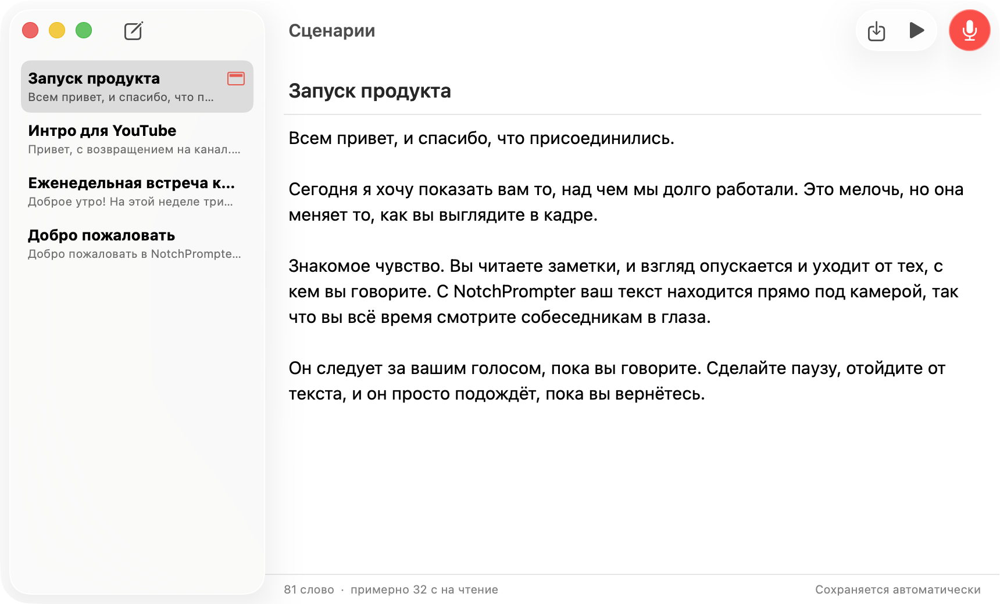
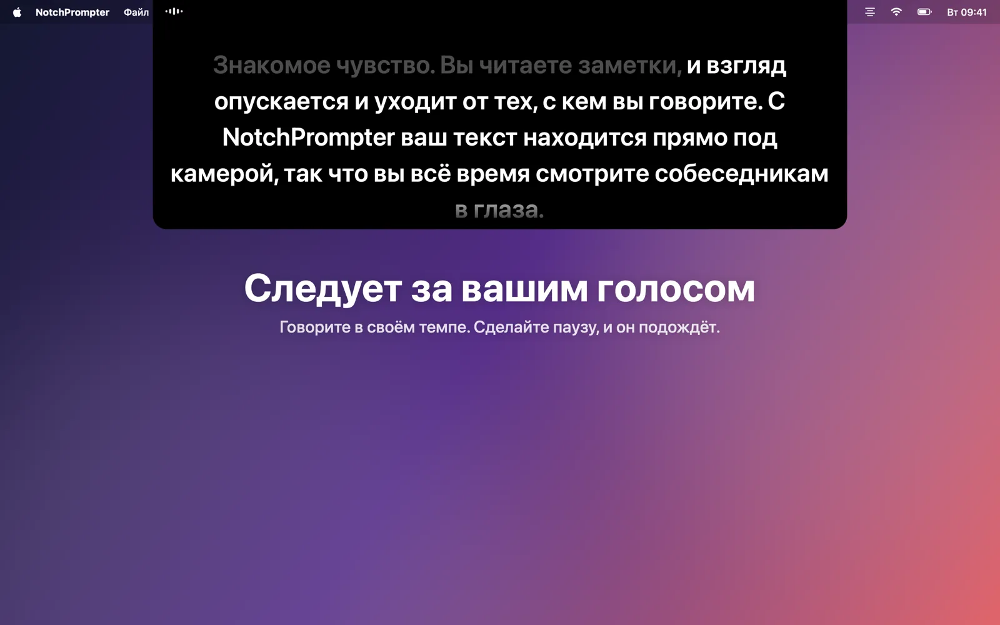
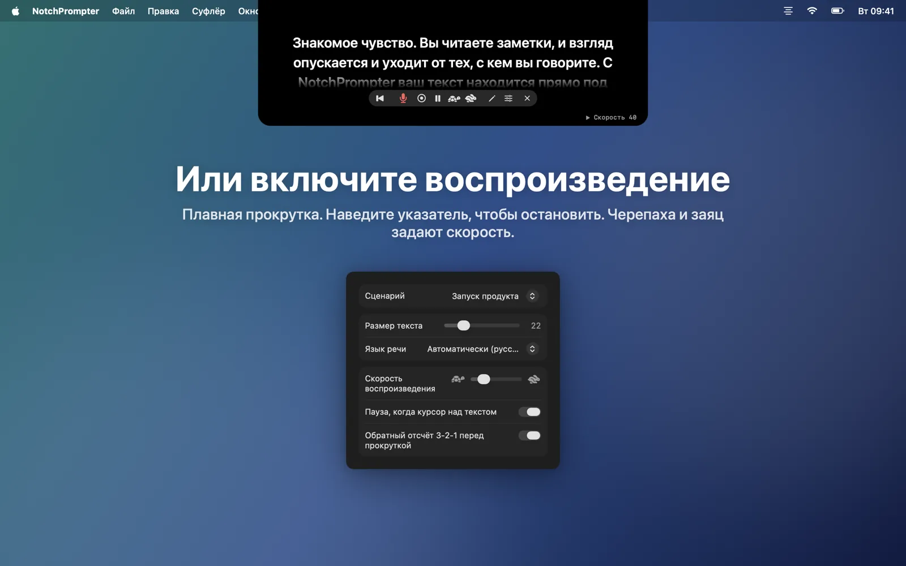
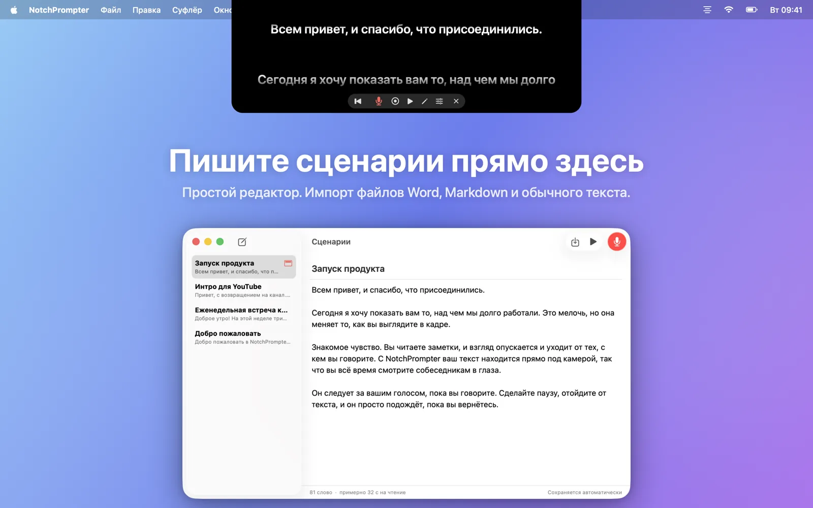
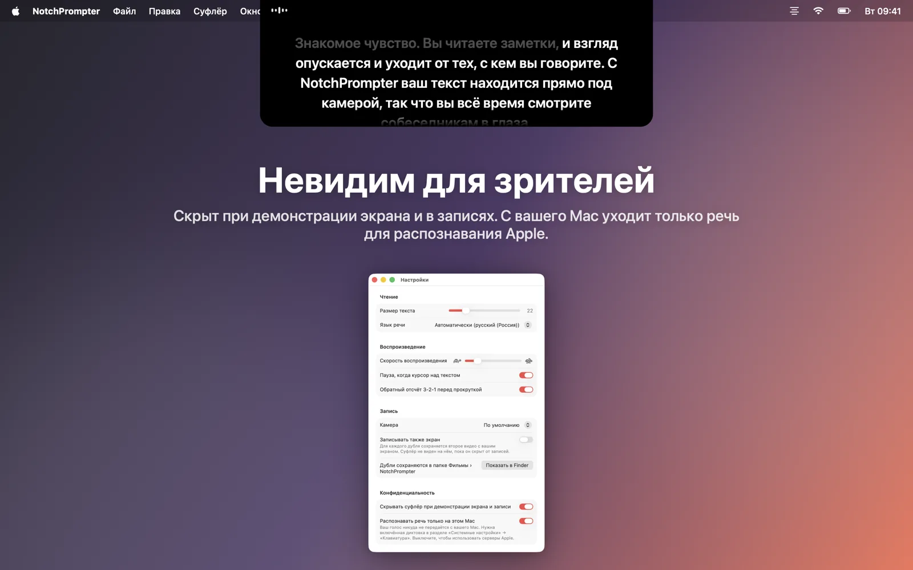
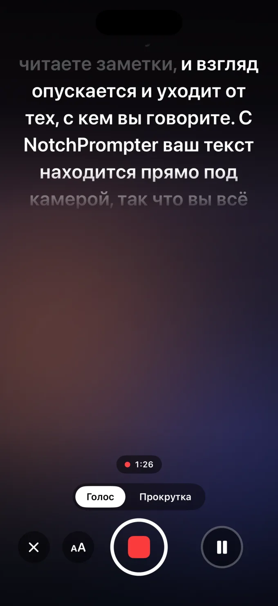

Сохраняйте зрительный контакт во время чтения
NotchPrompter размещает ваш текст прямо под камерой и следует за вашим голосом. На любом языке, даже если вы что-то пропускаете, и полностью на вашем Mac.
Бесплатно и с открытым исходным кодом. Для macOS 15 Sequoia или новее. Лучше всего работает на MacBook с вырезом в экране, а также на любом Mac с камерой сверху.
Посмотрите, как это работает
Читайте, делайте паузы, пропускайте. Суфлёр не отстаёт.
Всё необходимое. Ничего лишнего.
Небольшая чёрная панель под камерой, несколько понятных кнопок, простой редактор для ваших текстов и кнопка записи.
Следует за вашим голосом
Нажмите на микрофон и говорите. Следующие слова всегда прямо под камерой. Сказанные слова постепенно гаснут.
Любой язык, автоматически
NotchPrompter определяет, на каком языке ваш текст, и слушает именно этот язык. Английский, норвежский, немецкий, испанский, японский и ещё десятки других.
Не теряется, когда вы пропускаете
Пропустите предложение, замените слово, скажите «э-э». Он найдёт, где вы, и перескочит вместе с вами. Сделайте паузу — и он подождёт.
Или включите воспроизведение
Плавная прокрутка с обратным отсчётом 3-2-1. Наведите указатель, чтобы приостановить, а черепаха и заяц помогут задать скорость.
Встроенный редактор
Пишите и храните все тексты в одном месте. Импортируйте файлы Word, Markdown, RTF или обычные текстовые файлы. Всё сохраняется автоматически.
Записывайте себя
Нажмите «Запись», чтобы снимать себя камерой и микрофоном во время чтения. Каждый дубль сохраняется как фильм в папке «Фильмы».
Невидим для зрителей
Скрыт при демонстрации экрана, на снимках экрана и в записях. Его видите только вы.
Работает полностью на вашем Mac
Речь распознаётся на вашем Mac, а не в облаке. Без учётной записи и без отслеживания. Ваши тексты и записи никогда не покидают ваш Mac.
Ваши тексты в один клик
Нажмите на карандаш в суфлёре, чтобы открыть редактор. Выберите текст, нажмите на микрофон и начинайте говорить.
- Напишите или вставьте текст либо импортируйте файл.
- Нажмите Читать голосом.
- Смотрите в камеру и говорите.

Создан для камеры
Видеозвонки, YouTube, курсы, вебинары и презентации.




Также на iPhone
NotchPrompter для iPhone показывает ваш текст прямо под фронтальной камерой, следует за вашим голосом и снимает вас. Каждый дубль сразу попадает в «Фото».
Попробовать можно бесплатно. Режим «Прокрутка», редактор и учебный сценарий бесплатны, а ещё вы получаете 3 бесплатных дубля со следованием за голосом и записью. Потом одна покупка разблокирует всё навсегда: 49 kr в Норвегии или столько же в вашей валюте. Без подписки.
Приложение для iPhone не имеет открытого исходного кода. Оно использует тот же открытый голосовой движок, что и приложение для Mac. Скоро в App Store, для iOS 18 или новее.

Вопросы
Это правда бесплатно?
Да. NotchPrompter для Mac бесплатный, с открытым исходным кодом по лицензии MIT. Без рекламы, без подписки, без учётной записи. Исходный код лежит на GitHub: там можно сообщить об ошибке, предложить функцию или помочь в разработке.
NotchPrompter для iPhone можно попробовать бесплатно, а чтобы и дальше пользоваться следованием за голосом и записью, нужна одна разовая покупка. Подробнее.
Работает ли он без выреза?
Да. На Mac без выреза суфлёр висит у верхнего края экрана, под строкой меню, то есть всё равно рядом с камерой.
Какие языки поддерживает следование за голосом?
Десятки, включая английский, норвежский, немецкий, французский, испанский, китайский и японский. NotchPrompter определяет, на каком языке ваш текст, и слушает этот язык, так что ничего настраивать не нужно. Другой язык можно выбрать в настройках.
Увидят ли другие суфлёр, когда я демонстрирую экран?
Нет. По умолчанию он скрыт при демонстрации экрана, на снимках экрана и в записях. Если хотите его показать, это можно отключить в настройках.
Отправляется ли что-нибудь в облако?
Нет. Речь распознаётся на вашем Mac (при включённой диктовке в Системных настройках), а у NotchPrompter нет серверов. Следование за голосом никогда не сохраняет аудио. Фильм сохраняется, только когда вы нажимаете «Запись», и попадает в вашу собственную папку «Фильмы». Прочитайте политику конфиденциальности.
Какие есть сочетания клавиш?
Нажмите на суфлёр, затем: Пробел пуск/пауза, V голос, C запись, R в начало, ↑ ↓ скорость, + − размер текста, E редактор, Esc стоп.